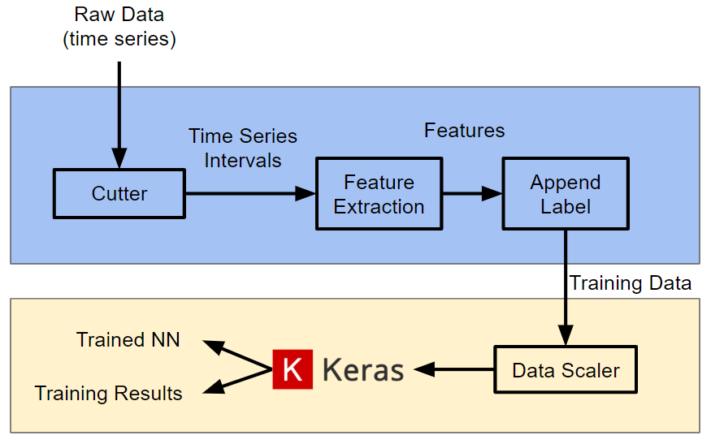

Classifying Driving Skill and Style
Paper
This was an exercise in time series classification. It would be very useful for ADAS system design or ride improvement if there was an online identifyer for the customer's preferences in how a car drives, based on how a human driver drives. Using Keras, I built a neural network that classifies whether a driver is agressive/calm and skilled/unskilled. Parameters used include speed and acceleration in x and y directions, engine RPM, brake pressure, throttle percentage, etc. This information can then be fed into other systems in the car to fine tune the way it drives itself when in autonomous mode.
To convert time series data into data points for the network, selected features were divided into time intervals and statistical values such as standard deviation, mean, and min/max were extrated from each interval to form a single data point. Using my extensive knowledge in vehicle dynamics and human/vehicle interaction, I was able to pinpoint the appropriate feature sets that give us good accuracy.